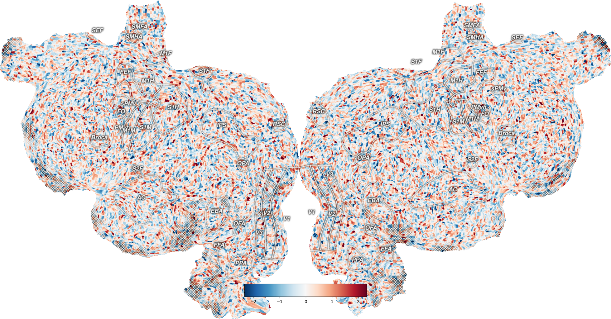

Note
Go to the end to download the full example code
Plot dropout regions on the flatmap¶
A dropout region is a region with very low EPI signal. In pycortex a crosshatch is used to display such dropout regions.
The crosshatches are created using the reference nifti image file with a threshold. Setting the with_dropout=True parameter in quickflat.make_figure takes the reference nifti image file and computes a thresholded version of this using the following formula:
FIXME: .. code-block:: python
rawdata[rawdata==0] = np.mean(rawdata[rawdata!=0]) normdata = (rawdata - rawdata.min()) / (rawdata.max() - rawdata.min()) normdata = (1 - normdata) ** power
Background RRGGBBAA: ffffff00
Area 0:0:1960.5:1024 exported to 1960 x 1024 pixels (96 dpi)
import cortex
import numpy as np
np.random.seed(1234)
# Create a random pycortex Volume
volume = cortex.Volume.random(subject='S1', xfmname='fullhead')
# Plot a flatmap with the data projected onto the surface
# Highlight the curvature and dropout regions
_ = cortex.quickflat.make_figure(volume,
with_curvature=True,
with_dropout=True)
Total running time of the script: (0 minutes 2.353 seconds)